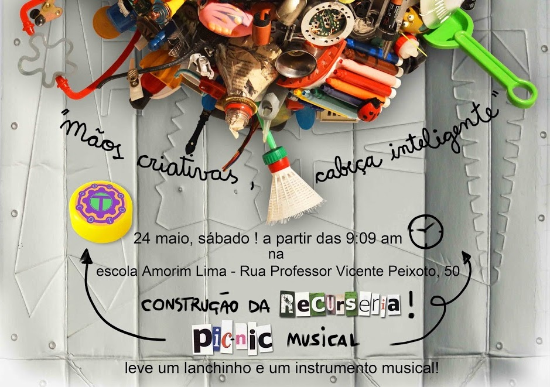

Há escolas que são gaiolas. Há escolas que são asas[...]
Escolas que são asas não amam pássaros engaiolados.
O que elas amam são os pássaros em vôo.
Existem para dar aos pássaros coragem para voar.
Ensinar o vôo, isso elas não podem fazer,
porque o vôo já nasce dentro dos pássaros.
O vôo não pode ser ensinado.
Só pode ser encorajado.
Rubem Alves
Amorim Lima
“A Escola é de Todos Nós”
Lici aut volectur, nim qui quia quiate cus aceatus eossi nobis idero voluptur?
Vollia dolore molupiet que conemol uptatibust, que plictem idipietur, volum aut am, nonsed etur, omnis dellore natinveles et volenih illoressimin pel ipsundaniet et andigna tquias am, cone dipsam abor sumquo moluptia coreped estiis dolendae lam, sam volupist, solor sin cone atur alis eaqui officia erspediae volo ommostrum quati verum illum con nobitiur? Ut re nonsecaborum id ut dist laborer chillandae ex exeriti berio volor mos peditis eatibus quiate nitio. Nam utentium, et ipsam entur?
Henis dolori aturepe rsperum ventibus maxim vendant eum quiasped ut que nonsequ iscipsam illiquis ma simaxim cori aut eicieni simusan diosam, imusda dolupiti quiasin parum re posaecum adis rem eaquis delitectus eture, sae omnist labo. Nem rerum voluptam, ut pore, omni dis verumque bo.
Re quid quate omniam
que est eum harchit,
suntiatemos maximpore
dolupta spissit ut
nist aut rerum que porporis rerfers pelest
vOlumqui rae. Nequam ex et optior sapita
consequi occum volorit imus qui tem faccuptis
pre la comnis maion provita spernam
et aut es Xerum aliqui aute sequodias
velent lamusci tasint volorrum eate
sam, ime doluptibus autatiam sam, quo
Projetos e eventos que
necessitam da ajuda da
comunidade
Aqui no Amorim , todo mundo pode
ajudar a construir uma escola melhor,
normalmente os familiares se organizam
em comissões, pessoas que se juntam
para realizar projetos de melhorias na
nossa escola. Existem atualmente as
seguintes Comissões que precisam de
mais gente ajudando, mas quem quiser
pode oferecer outros projetos que
considere pertinentes e que visem o
melhor para todos os alunos da escola:
Comissão de Festas Organização,
Comissão de Prendas da Festa Junina
Comissão de Comunicação mural, site,
Comissão da Alimentação melhoria
Comissão de horta e compostagem:
Comissão do Bazar Arrecadação,
Comissão da Biblioteca a escola não
Comissão de Arrecadação No Amorim
Comissão de Formatura
lkajsdkl jalkssd jalksdj klshilusdh aishf iah fiah iuh

A experiência pedagógica de educação democrática desenvolvida por duas escolas de São Paulo, a EMEF Desembargador Amorim Lima, no Butantã, e a EMEF Campos Salles, em Heliópolis, inspirou o projeto Escolas que Inovam, criado pela Fundação Telefônica em parceria com o Instituto Natura para apoiar a inovação educacional em curso nas escolas com a introdução das TIC (tecnologias de informação e comunicação) no projeto pedagógico. Somando esforços, o projeto busca desenvolver cidadãos plenos aptos a enfrentar os desafios do mundo que os cerca.
A parceria entre práticas pedagógicas inovadoras, uso de tecnologia e foco na individualização da formação do aluno geram resultados positivos. As matérias regulares convivem com a capacitação para as competências do século XXI e a avaliação dos resultados são os pilares do projeto.